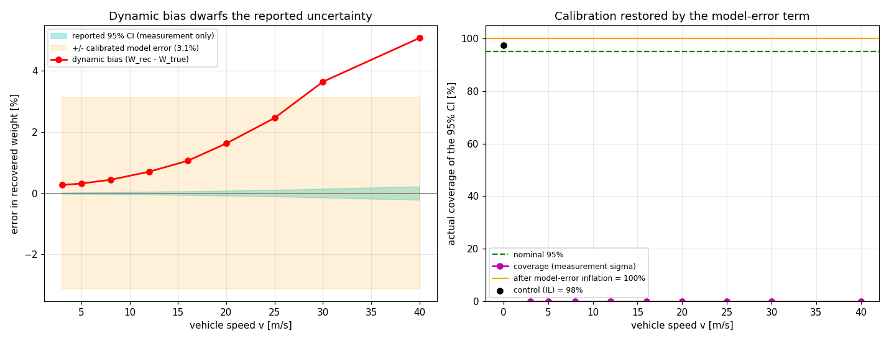

Bridge Weigh-in-Motion recovers a truck's axle weights by inverting the bending response of an instrumented bridge. A Bayesian version of the recovery returns not just a number but a 95 percent credible interval. The interesting question is not the number; it is whether you can trust the interval. On a dynamic bridge, the honest answer is that a naive interval is far more confident than it has any right to be.
A reassuring test that proves almost nothing
The recovery is a linear-Gaussian inverse problem: the recovered weight has a mean (the least-squares estimate) and a covariance built from the fit residual. From these follows a 95 percent credible interval. The natural check is a coverage test: generate many synthetic crossings, recover the weight, and count how often the true weight falls inside the interval.
When the synthetic data and the inverse both use the same static influence line, the test returns 95.3 percent coverage. That looks like a calibrated interval. It is not, or rather it only confirms that the linear-Gaussian machinery is implemented correctly. The forward and inverse models agree by construction, so the test cannot see any error that comes from the model itself. It is circular.
The honest test, where the interval collapses
The honest test replaces the forward model with the full coupled dynamic finite-element model: a
beam with a moving, suspension-coupled vehicle, integrated in time. Now the recovered weight is
biased by dynamic amplification, from about +0.3 percent at very low speed to about
+5 percent at 40 m/s. Crucially, the fit residual still looks small, because the
measured signal still has the shape of an influence-line response; the residual measures goodness
of fit, not the dynamic error in the scale of the answer.
So the interval stays narrow while the estimate drifts away from the truth. The true coverage of the nominal 95 percent interval collapses toward zero: the interval almost never contains the true weight, even though it is labelled 95 percent.

Calibrating the uncertainty from the physics
The fix is not to widen the interval by an arbitrary fudge factor. The missing term has a
physical value: the root-mean-square dynamic bias over the highway speed band is about
3.1 percent. This number comes from the dynamics the static inverse ignored, not from
an assumption. Inflating the posterior by this model-error term brings the true coverage back to
nominal.
A calibrated uncertainty has to account for model error, not only measurement noise. On this bridge, the model error is the dominant term, and it can be quantified from the physics rather than guessed.
Why it matters
An overload-enforcement decision is only as good as the confidence attached to it. Reporting a weight with a 95 percent interval that is really a 0 percent interval is worse than reporting no interval at all, because it invites false confidence. Separating verification (is the maths right) from validation (does the answer mean something) is what surfaces this, and it generalises well beyond bridges: whenever an inverse problem is solved with a simplified forward model, the uncertainty must include the error of that simplification.